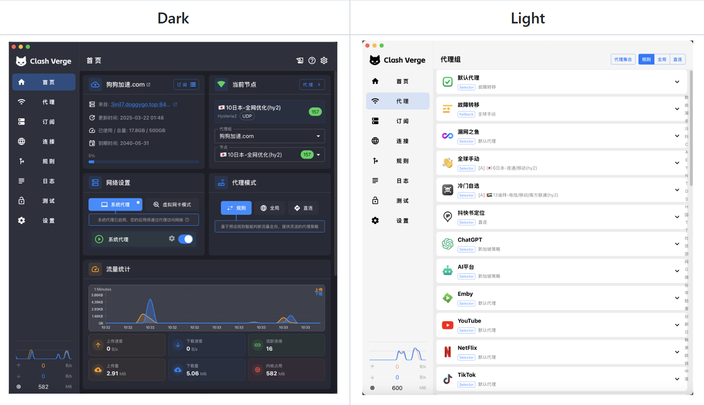

Clash Verge Rev - 新一代开源代理客户端与智能网络路由管理工具
全平台智能代理管理中心。通过灵活的规则配置、精准流量分流与 TUN 模式接管技术，实现多平台网络优化，为个人用户、企业办公及跨境业务提供稳定、高效、安全的网络访问方案。

Clash Verge Rev 进阶技术演进：内核层原理解析
Clash Verge Rev 的技术演进核心在于从传统“代理客户端”升级为“系统级网络流量管理平台”。其底层采用 Mihomo（Clash Meta）代理内核，结合 Tauri + Rust 架构，实现更高效、更稳定的跨平台网络管理。
确立核心技术边界
Clash Verge Rev 的核心技术边界主要围绕 网络流量接管、代理协议处理、规则路由调度和系统级网络管理 展开，而不是提供网络资源本身或改变底层网络环境。
分流逻辑的触发链条
Clash Verge Rev 的分流本质是 “流量进入 → 解析识别 → 规则匹配 → 策略决策 → 节点转发” 的自动化路由流程，当本地应用发起网络连接时，Clash verge rev系统网络层捕获请求，接着，交由TUN/系统代理接管请求，Mihomo 内核接收数据流量，再根据DNS解析与域名识别的IP选择代理策略组和具体节点，最后创建代理连接到目标服务器，再将目标服务器返回的数据给到应用。
多分支内核的差异分化
Clash Verge Rev 本身是客户端界面，真正负责网络处理的是后端代理内核。随着 Clash 生态发展，内核经历了多个分支，不同分支在协议支持、性能优化、功能扩展和维护方向上逐渐形成差异，技术社区衍生出了如 Mihomo 内核等更具活力的活跃分支。
Clash Verge Rev客户端独立下载中心
提供面向主流操作系统深度优化的应用版本，针对不同平台进行性能适配与体验优化，客户端来源均为GitHub仓库，保证应用的开源和安全。
Windows
适配 Windows 10/11 (x64 / ARM64)
macOS
兼容 Intel 芯片与 Apple M 系列全家桶
iOS
支持最新版 iPhone、iPad 设备部署
Android
完美契合安卓手机及智能电视大屏盒子